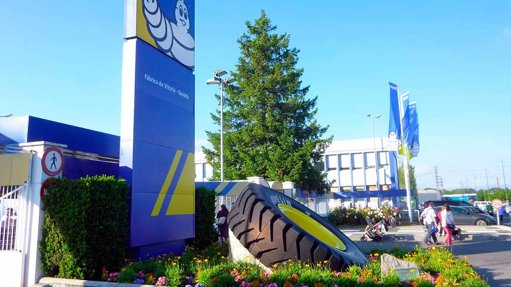
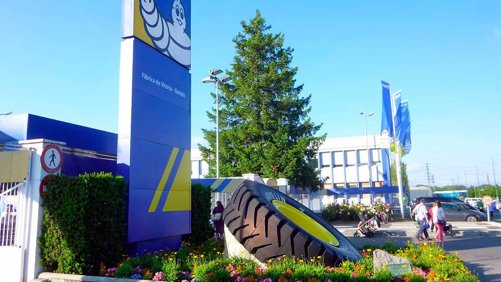
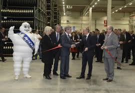

HISTORIA MICHELIN VITORIA
 

HISTORIA DE MICHELIN VITORIA
La fábrica de Michelin en Vitoria, España, abrió sus puertas en 1970, convirtiéndose en uno de los pilares de la industria del neumático en el país. Desde su inauguración, la planta ha sido una de las más importantes para la marca Michelin en Europa, siendo reconocida por su capacidad de innovación y producción.
Desde sus primeros días, Michelin Vitoria se destacó por su avanzada tecnología de producción. A lo largo de los años, la planta ha sido testigo de importantes cambios, adaptándose a nuevas demandas del mercado y manteniendo un alto nivel de innovación.
La ubicación de la planta en Vitoria fue estratégica, ya que la región cuenta con una fuerte tradición industrial, lo que facilitó la integración de la fábrica en el ecosistema local.
PRODUCCIÓN Y CAPACIDAD
- Especialización: Neumáticos para turismos, camiones, vehículos agrícolas y maquinaria pesada.
- Producción anual: Más de 22 millones de neumáticos (2019), cifra más alta hasta la fecha.
- Capacidad de adaptación: Innovación constante en procesos de fabricación.
Michelin Vitoria se distingue como una de las fábricas más importantes dentro de la red global de Michelin, destacándose por su capacidad para producir neumáticos de alta calidad.
LOGROS Y RECONOCIMIENTO
- Innovación: Reconocida como una de las plantas más innovadoras dentro de Michelin.
- Premio a la excelencia: Premio a la excelencia en calidad de productos y procesos (2017).
- Sostenibilidad: Reducción del 30% en la huella de carbono desde 2015.
- Generación de empleo: Más de 3,000 empleos directos e indirectos generados en la región.
- Responsabilidad social: Programas de formación y apoyo a la comunidad.
Michelin Vitoria ha sido clave en la consolidación de la marca como líder en innovación y sostenibilidad. La planta ha contribuido significativamente al desarrollo local y ha logrado importantes reconocimientos por su compromiso con la calidad y el medio ambiente. Estos logros son testimonio del esfuerzo continuo de la fábrica por mantener altos estándares de excelencia.